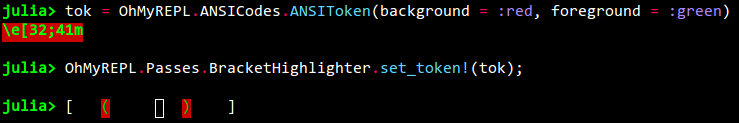

Bracket highlighting

Makes matching brackets highlighted when the cursor is between an opening and closing bracket.
Settings
Info
Please refer to the Crayons.jl documentation while reading this section.
It is possbile to change the way the highlighted bracket is printed with the function
OhMyREPL.Passes.BracketHighlighter.setcrayon!(::Crayon)
